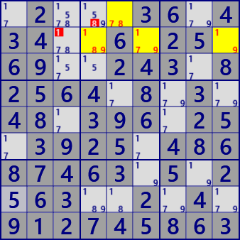
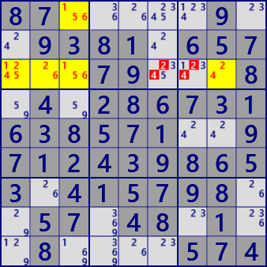
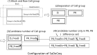
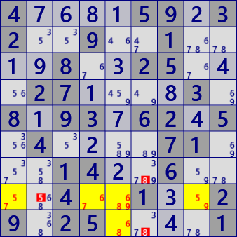
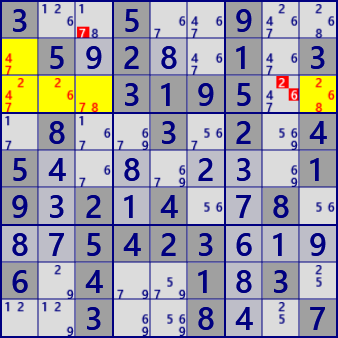
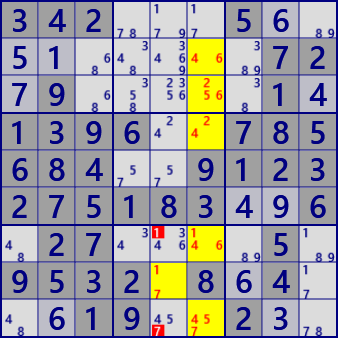
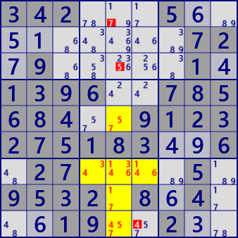

SueDeCoq
⇒SueDeCoqEx (発展形)
SueDeCoqは、この手法を最初に提案した ハンドルネーム"SueDeCoq"に由来する解析アルゴリズムです。
SueDeCoqのアルゴリズムを理解するには、若干の飛躍が必要なので、例を用いて段階的に説明します。
なお、ここでの説明の多くは、次のHPを参考にしています。
http://hodoku.sourceforge.net/en/tech_misc.php#sdc
次の例は 基本的なSueDeCoqです。左図では、ブロック2のr2c46に着目します。
①この2セルには4候補数字#1789があり、同じブロックのr1c5には候補数字#78があります。
これらの3セルを合わせて考えると、r2c46の2セルには#19(78)が入ります(r2c46は#78の一方のみで、両方はない）。
②2行目について考えると、r2c9には候補数字#19があるので、着目するr2C46の2セルには#(19)78が入ることになります(r2c46は#19の一方のみで、両方はない）。
①と②を合わせると、着目するr2c46には#(19)(78)が入ることになり、r2c46は"2セルに2数字"のLockedとなっています。
ただし、2数字ペアのどちらかは決まっていません。
この状態で2行目のr2c3の#1はr2c9との関係で着目セルR2C46のLockedを壊す（r2c46に入る数字が足りなくなる）ので入れることは出来ません(r2c3=#1は偽)。
同様に、ブロック2のr1c4の#8は、r1c5との関係で着目セルr2c46のLockedを壊すので、入れることは出来ません(r1c4=#8は偽)。
右図では、ブロック1のr3c123に着目します。これらの3セルには5候補数字#12456があります。
左図と同様に考察すると、r3c123は#6(15)(24)でLockedとなっています（3セルに3数字）。
従ってr3c67の#24はこのLockedを壊すので(r3c123に入る数字が足りなくなる)、候補数字から除外できます。

SueDeCoq (ALS Level-1)ALS(block) : r1c5 r2c46 #1789
ALS(row) : r2c469 #1789)

SueDeCoq (ALS Level-1)ALS(block) : r13c3 r3c12 #12456
ALS(row) : r3c1238 #12456)
< class="newLine" width="80%"> .2...3..4.4....25.6...243.8256..8....8..9..2....2..4868.463...2.63....4.9..7...6.
87........9.81.65....79...8.....67316..5.1..97124.....3...57....57.48.1........74
以上の具体例を参考に、SueDeCoqのLockedを定義します。次図はここに登場するセル群の構成です。
- ブロック内のセル群(ISPB)と、行(または列）のセル群(ISPR)がある。
- 2つのセル群は、共通部分(IS)とその他の部分(PBとPR)に分解する。
- 分解したセル群にはそれぞれ候補数字(IS_FreeB、PB_FreeB、PR_FreeB)をもつとする。
- 共通部分に対し、その他の部分(PBとPR)のみにある候補数字をPB_FreeBn、PR_FreeBnとする。
(PB_FreeBn= PB_FreeB\IS_FreeB、PR_FreeBn= PR_FreeB\IS_FreeB \：差集合) - その他部分のみにある候補数字の数をNとする(N=|PB_FreeBn|+|PR_FreeBn|)。

これらの定義を用いて、SueDeCoqの解析アルゴリズムはつぎのようになります。
SueDeCoqが成立するためには、まずLockedが成立している必要があります。
- 共通部分ISのセル数は2または3。
- その他の部分(PB、PR)は空ではない。
- 共通部分とその他の部分(PBとPR)の全てに共通の候補はない。
- |IS|=|IS_FreeB|-（|PB|+|PR|-N） (|A|は集合Aの要素数）
先の例はN=0の場合です。PRとPBにある候補数字がISと共通であり、ISの候補数字の可能性がセル数に一致することを表します。
N=1のとき、ISにはない候補数字がPR(またはPB)に1つ加わりますが、同時にPR(PB)のセル数1つ増えます。 セル数の増加を独自候補数字の数(N=1)が調整することを表します。
以下、Nが順次増えた場合もセル数が対応して増え、Locked判定の条件となっています。
Lockedが成立すると、あとは実際にLockedを壊すセル・候補数字を探します。
最初の例に当てはめると次のようです。
- 共通部分のセル数=2に対し、候補数字は4ある。
- 行の共通部分以外のセルには、共通部分と同じ候補数字が2個あり、共通部分の候補数字を1個分限定している。
- 同様に、ブロックの共通部分以外のセルは、共通部分の候補数字を1個分限定している。
- その他部分独自の候補数字は、行、ブロックともにない（N=0）。
SudeCoqの例
多数のセルによるSueDeCoqの例を示します。




4....59.32..9..1....8..25...27....3.8.93.62.5.4....71...14..6....4..1..29.25....1
3..5..9...5.2..1.3...3195...8..3.2.45.......19.2.4..8...5423...6.4..1.3...3..8..7
342...5.........72.9.....1.1396..785684..9123275183..6.27....5.9532.8.4...19..2..
342...5.........72.9.....1.1396..785684..9123275183..6.27....5.9532.8.4...19..2..